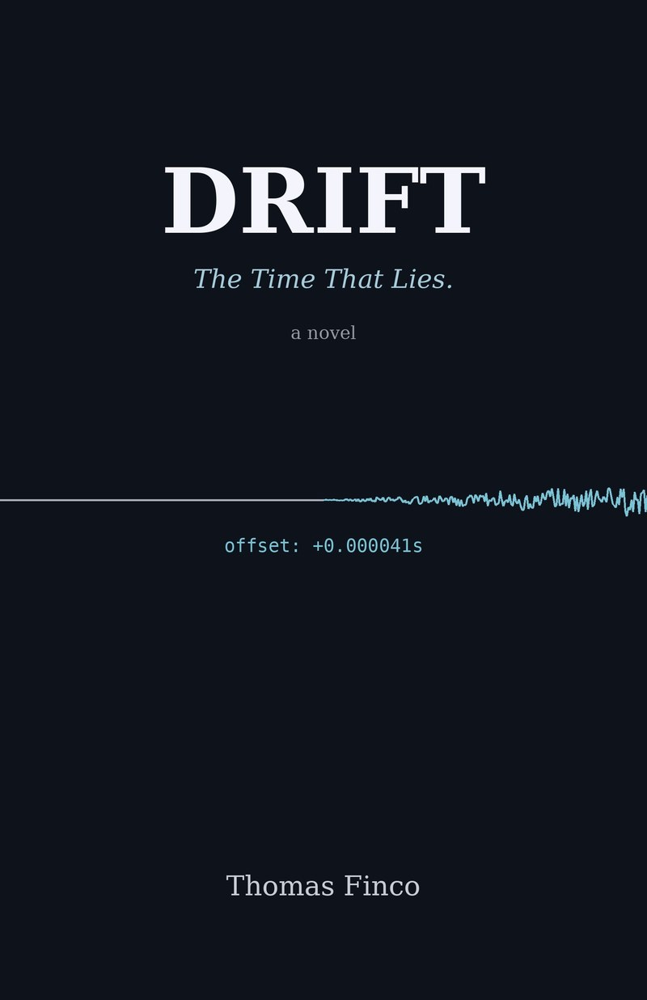

What time is it, really?
Stock exchanges, banks and power grids rely on time servers locked to atomic clocks and to the GPS signal. If the time slips by a few microseconds, usually nobody notices.

The Time That Lies.
A 41-microsecond offset. To everyone else, it's noise. To Elena Marchi, it's a signature.
A novel by Thomas Finco
The book
In Trieste, Elena Marchi runs a cluster of time servers locked to atomic clocks: invisible work that stock exchanges, power grids and banks depend on.
When she notices that something on the network is moving the hands of the clock, nobody takes her seriously. Four years ago she was right too early, and it cost her dearly.
It isn't an attack anyone can see. It's a slow drift that makes timestamps unreliable, and without timestamps you can no longer say what happened before what.
From Trieste to London, to the gates of Paris, Elena will have to decide whom to trust, starting with herself.
Drift is the English edition of Deriva, the novel's original Italian title.
The real part
Stock exchanges, banks and power grids rely on time servers locked to atomic clocks and to the GPS signal. If the time slips by a few microseconds, usually nobody notices.
In Sèvres, near Paris, the BIPM computes Coordinated Universal Time (UTC) after the fact, by combining the atomic clocks of national laboratories.
If you can't trust timestamps anymore, you can't tell what happened before what: transactions that duplicate, records that are useless, evidence that doesn't hold up.
No plot spoilers: these are the real things the novel starts from.
Excerpt